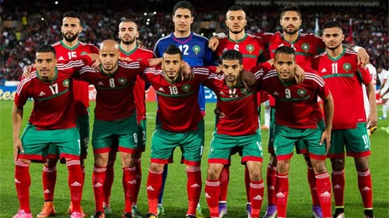

De Souq Waqif is tijdens het WK Voetbal in Qatar helemaal volgepakt. Als je door de grote hal loopt komt een enorme drukte je tegemoet. Je komt voetbalshirts tegen van over de hele wereld. Het is hectisch. Telkens wanneer er iemand is die verslag uitbrengt in een studio op tv, vormen groepen fans hun achtergrond, die allemaal het moment filmen. Na de wedstrijden gaan fans terug om samen te komen en te feesten, waarbij ze tot laat in de nacht en in de ochtend de volksliederen van hun huis zingen. Je zult veel shirts, waarschijnlijk vaak die van Argentinië- en Brazilië, maar misschien wel het meest talrijke voetbalshirt- vooral als het land moet spelen - is het rood van Marokko. De wedstrijden van Marokko zijn tot nu toe een ongelooflijke, levendige, maar ook claustrofobische ervaring in Doha. Als het enige Arabische land dat nog in het toernooi zit, is Marokko een enorme inspiratiebron. Het geluid in het stadion is het soort dat door je heen rammelt, de geluiden van "Allez Maghreb" kloppen in je hoofd. De Marokkaanse spelers gedijen bij dit geluid, de tegenstanders kunnen elkaar niet meer verstaan. In de groepsfase speelde Marokko met 0-0 gelijk tegen Kroatië, versloeg het België met 2-0 en kwam het via een 2-1 zege op Canada in de achtste finales. Marokko plaatste zich voor de tweede keer in de historie (eerder in 1986) voor de knock-outs dit is een een van de mooie momenten uit de geschiedenis van hdt afrikaansd/arabische sport wat voor een veel marokanen vmaar ook arabieren en afrikanen en dit was ngroot feest.
